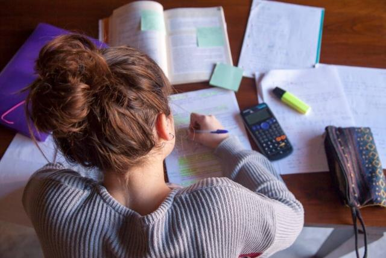

"aprende, avanza y estudia por medio de la tecnologia"
El proceso de aprendizaje es algo muy subjetivo, pero hay unas técnicas para aprender más rápido que puede ser bastante útiles. ¿De qué dependen? De las habilidades que vamos adquiriendo y desarrollando en nuestros diferentes roles, ya sea como estudiantes, profesores o padres.
Sin embargo, estas habilidades de aprendizaje pueden adquirirse a través de métodos como la lectura, reconocida como una de las técnicas más importantes de estudio, ya que se reconocen palabras, se entienden ideas y puedes comparar tu pensamiento con el del autor.
Otra de las técnicas para aprender más rápido radica en enseñar a otros lo que ya sabes. Esto sucede porque te ves en la necesidad de estudiar más sobre los temas que enseñarás, así ya los domines.
El aprendizaje puede estar ligado a muchos aspectos. Entre ellos están las metodologías y competencias que usa quien nos está enseñando. En este proceso es muy importante reconocer que no todas las cosas que pensamos son tal como lo imaginamos. Esto nos permitirá estar más abiertos a la hora de adquirir conocimientos. También es importante reconocer que hay distintas clases de talentos o habilidades, por lo que una persona puede ser buena para los números y otra buena para escribir.
De otro lado, el aprendizaje dependerá del compromiso propio. No debes delegarlo solo porque te cuesta un poco más. Convierte esa dificultad en un motivante; piensa que con el paso del tiempo podrás volverte bueno. Sé curioso, identifica aquello que te parece interesante y profundiza.
Finalmente, recuerda que la pasión y las ganas lo son todo. Si te apasiona algo, ponle empeño en llenar tu cabeza de nuevos conocimientos, para lo que resulta muy útil ejercitar la memoria.
Al entrenar tu cerebro notarás que se facilita el proceso de aprendizaje y recordarás por más tiempo y con mayor facilidad lo aprendido. Cuando entrenas tu memoria puedes adquirir habilidades como la concentración, la visualización, la organización y la imaginación.
A continuación te presentaremos varias técnicas que puedes usar para mejorar tu capacidad de aprendizaje. Quizá alguna te guste y puedas ponerla en práctica.
En muchas ocasiones, debido a la falta de tiempo, olvidamos la importancia de la planificación mental. Esto es ideal porque podemos identificar prioridades, medir el tiempo y el esfuerzo que hacemos para hacer nuestro trabajo. Es normal que al principio te pueda parecer un poco tedioso y te cueste hacerlo, pero una vez lo hagas, notarás cómo esta habilidad cognitiva mejora tu capacidad para aprender más rápido.
Identifica qué metodología te resulta mejor al momento de aprender. Recuerda que son varias y puedes escoger más de una. Incluso, verás que con cada actividad lograrás reforzar lo que ya sabes. Puedes leer, hacer cuadros conceptuales, mentales, comparativos, hacer resúmenes o memorizar.
Estudios han señalado que el mindfulness, también llamado método de atención plena, incrementa la función cognitiva. Esta técnica incluye el aprendizaje sobre el control de la ansiedad, la regulación de las emociones y el manejo de la concentración y la respiración. Este conjunto de habilidades te pueden ayudar a aprender más rápido y a manejar la frustración en los casos en los que el tema a aprender se te complique.
Si estudias un poco cada día lograrás recordar más fácil toda la información. De esta forma, te ayudarás a ti mismo a anular el cansancio mental que puede darse en momentos en los que se busca aprender todo lo que se requiere. Además, al distribuir el material o los módulos abrirás espacios para que puedas plantearte preguntas que ayuden a reforzar lo que ya sabes.

¿De qué te servirán las técnicas de estudio?
Te facilitarán los aprendizajes académicos y te ayudarán a obtener mejores resultados en los exámenes, sobre todo cuando empieces la secundaria.
He aquí seis pasos para estudiar mejor:
He aquí algo que probablemente te sorprenderá: ¿sabías que antes de que te pongas a estudiar ya has empezado a hacerlo? ¿Cómo es posible? Cuando prestas atención en clase y tomas buenos apuntes, estás empezando el proceso de aprendizaje y estudio.
¿Te cuesta prestar atención en clase? ¿Te sientas cerca de una persona que habla mucho o es muy ruidosa? ¿No ves bien la pizarra? Asegúrate de sentarte en un buen sitio para poder prestar atención. Si hay algo que te impide prestar atención o tomar buenos apuntes en clase, coméntaselo al profesor o a tus padres.
¿No sabes tomar apuntes? Empieza anotando la información que explique o escriba en la pizarra tu profesor durante la clase. Intenta hacer buena letra para que después entiendas tus apuntes. También es una buena idea tener los apuntes, exámenes, pruebas sorpresa y documentos de trabajo ordenados por asignaturas.
Esperar al jueves por la tarde para estudiar el examen del viernes te obligará a hincar los codos durante toda la noche, ¡lo que no tiene nada de divertido! Además difícilmente darás lo máximo de ti mismo si no pegas ojo en toda la noche. Todos posponemos cosas de vez en cuando. Una de las mejores formas de asegurarte de que eso no te pasa a ti es planificando el tiempo de estudio con antelación.
Pide un calendario que sea guay (uno que te guste y que puedas tener cerca de tu escritorio o lugar de estudio) y anota las fechas de entrega de los trabajos escolares y de los exámenes. Luego planifica cuánto tiempo dedicarás cada día a estudiar cuando salgas del colegio o instituto y cuánto tiempo dedicaras a cada asignatura. ¿Las clases y actividades extraescolares hacen que te resulte difícil encontrar tiempo para estudiar? Pide a tu madre o padre que te ayuden a diseñar un horario para organizarte el tiempo.
Cuando tengas que estudiar mucho material, te ayudará dividirlo en cachitos. Supongamos que tienes una prueba de ortografía sobre 20 palabras. En vez de pensar en todas las palabras a la vez, intenta dividir el trabajo en bloques de cinco palabras y estúdiate uno o dos bloques cada día.
No te preocupes si no te acuerdas de algo que has estudiado primero. Ahí es donde entra en juego la práctica. Cuanto más días dediques a repasar algo, más probabilidades habrá de que se te grabe en la memoria. También hay algunos truquillos, como las reglas nemotécnicas, que ayudan a recordar cosas. Por ejemplo, si tienes que memorizar una lista, construye una frase o palabra con la primera letra de cada elemento de la lista. Supón que te tienes que aprender los ocho planetas del sistema solar ordenados en función de la distancia que los separa del sol. La frase “Marta Vio a Tu Madre Jalando Sola Una Noche” puede ayudarte a recordar “Mercurio, Venus, la Tierra, Marte, Júpiter, Saturno, Urano y Neptuno”. Tu profesor también puede darte ideas.
Otra forma de dividir el material en bloques es estudiando regularmente en vez de dejarlo todo para el último día. La tarde previa al examen puedes dedicarla a repasar los apuntes o a releer los temas. O, si estás estudiando matemáticas o ciencias, puedes hacer problemas para practicar.
¿Cuánto tiempo seguido puedes estudiar cada tarde? Tu profesor puede ayudarte a saberlo. La mayoría de los cerebros solo pueden concentrarse atentamente en algo durante unos 45 minutos. O sea que, si ya llevas un buen rato estudiando y notas que te empieza a costar mantener la atención, prueba a hacer una pausa yendo a buscar un vaso de agua o dándote una vuelta por tu casa ¡Pero no caigas en la tentación de poner la tele y/o dejar de estudiar!
No se puede estudiar bien cuando uno no entiende la materia. Asegúrate de pedir ayuda a tu profesor si hay algo que no acabas de entender. Puedes intentar salir del bache releyendo tus apuntes. ¿Te aclaran algo? En caso negativo, pídele al profesor que te lo vuelva a explicar o que reviséis juntos tus apuntes. Si te estancas mientras estudias en casa, tal vez tu madre o tu padre puedan echarte una mano.
El examen es mañana. Tú has seguido tu plan de estudio y has aplicado las técnicas que te hemos explicado pero, de repente, tienes la sensación de que no te acuerdas de nada, ¡ni siquiera de cuánto son 2+2! ¡No te dejes dominar por los nervios! Tu cerebro necesita tiempo para asimilar toda la información que ha incorporado. Intenta dormir bien por la noche y mañana te sorprenderá lo bien que te sabes la materia.
fuente:https://kidshealth.org/es/kids/studying.html